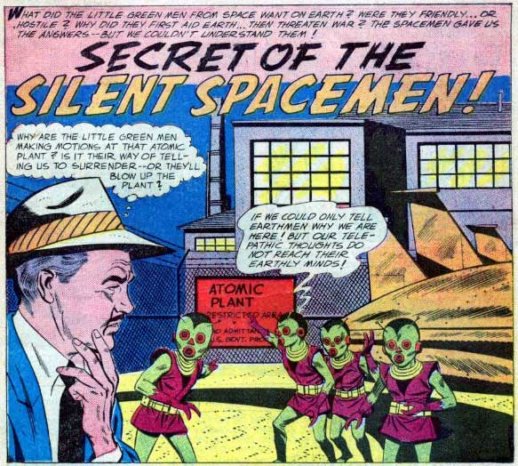

A Azusa (Californie), observation d'un disque avec des lumières ambres autour du bord,
effectuant une descente verticale vacillante UFO Evidence, NICAP, XII.
Dans "Le secret des hommes de l'espace silencieux" de Aventures Etranges (DC Comics) n°
82, les hommes se demandent pourquoi des occupants d'ovnis rodent autour de sites nucléaires

L'IGY débute avec l'Antarctique l'effort principal de scientifiques de
67 pays pour les 18 mois à venir. 12 nouvelles bases sont construites avec la base américaine d'Amundsen-Scott
au Pôle Sud construite pour les expéditions de l'opération Deepfreeze. L'IGY est notamment organisée par le docteur Lloyd Viel Berkner,
membre de la Commission Robertson et du supposé groupe
MJ-12.
A Avon (Massachusetts), observtion d'un ovni en forme de cigare avec des lumières vertes semblables à des
fenêtres UFO Evidence, NICAP, XII.
Près de Campos (Brésil), observation d'un disque avec dôme et ouvertures
dépassant un avion de ligne UFO Evidence, NICAP, X.
A Hamilton (Ontario, Canada), un mandataire voit un ovni blanc elliptique
fonçant UFO Evidence, NICAP, X.
Une couche nuageuse est à l'origine de la disparition d'un appareil au-dessus de la région comprise entre Venise
et Padoue : Le pilote demande à descendre de 11 000 pieds à 5000 pieds. L'autorisation lui est accordée. Non
seulement le pilote n'enverra plus d'appel, mais on n'en retrouvera plus aucune trace.
Le modèle de lanceur russe R7 est prêê>
à A Las Vegas (Nevada/Arizona du Nord),
depuis la station radar ADC de l'USAF du 865ème ACWRON de Las Vegas AFS d'Angel Peak (Nevada), le 1er
lieutenant Clifford E. Pocock (directeur sénior), Walter Lyons (opérateur à l'écran A/2c), et Armand Therrien
(technicien de contrôle A/1c), utilisant le radar de recherche FPS-3A L-band, repèrent une cible arrivant à une
vitesse moyenne d'environ 6200 miles/h durant 48 s [?] lorsqu'elle s'arrête brênt et reste
stationnaire durant 12 s à l'ENE à 75° d'azimut et 85 miles de distance, au nord de Grand Canyon, puis s'éloigne
à environ 7000 miles/h selon une orientation de 85° durant les dernières 72 s avant de disparaître à la portée radar
maximale de 81° azimut et 224 miles de distance (près de Marble Canyon, en Arizona). La cible répond à des signaux
IFF militaires cryptés de transpondeur et transmet des réponses cryptées. Un événement semblable fut noté 2 jours
plus tôt par l'équipe de nuit mais aucun autre durant des années Aldrich, J.: < NICAP .
- A Mont Lemmon (Arizona), depuis la station
radar ADC du 684ème ACWRON du Mont Lemmon AFS de l'USAF, le capitaine Claiborne F. Bickham
(directeur sénior) et l'équipe utilisant à la fois la recherche MPS-7 L-band et les radar d'altitude MPS-14
S-band repèrent une cible stationnaire à 42 000 pieds au nord-ouest à 308 ° d'azimut et une distance de 82 miles
(au sud de Chandler, en Arizona). La cible répond à des signaux militaires IFF de transpondeur mode 3 cryptés,
transmet des réponses cryptées résultant en un affichage normal en mode 3 sur les écrans radar, et un
stroboscope très léger venait de l'objet comme un blocage par contre-mesures électroniques. L'observation a
duré 34 mn Aldrich, Jan < NICAP.
: A Nemuro Strait (Japon), 2 pilotes de l'USAF volant dans des
chasseurs à réaction F-86 sont envoyés intercepter un objet en forme de disque, repéré par radar au sol et vu par
des témoins au sol Weinstein, D.Fichier Blue Book?.
- (heure de Moscou) Des gens sur un petit terrain d'aviation de
l'Oural voient un objet étrange voler vers le nord. Il brille comme une étoile de magnitude 2 mais ne scintille
pas. Il est visible dans la constellation de Cassiopée mais n'est clairement pas plus haut que 350 m et a une
vitesse de 150 noeuds. L'objet vire vers l'ouest et accélère à 400 noeuds (la vitesse d'un turbo-réacteur),
volant au-dessus du terrain d'aviation sans aucun bruit. Puis soudain il reste immobile en l'air pendant 10 s.
La lumière qui en émane alors est assez sphérique et on ne distingue pas de rayons de lumière. La couleur est
celle d'un rose rougeâtre. Après cette brève pause la "lumière" redémarre et part à un angle de 45 ° selon un
direction nord-ouest, pendant plusieurs secondes à une vitesse de 100 à 120 noeuds, puis s'arrête soudain ê; 45
° au-dessus de l'horizon. Après cela il se déplace jusqu'à être proche de la ê contrôle et la lumière commence à
pulser. Elle fait alors une ascension, peut-être en spirale. A 80 &dêdessus de l'horizon elle semble tourner
comme un satellite autour d'un axe (invisible). Une fois l'objet éloigné il semble être approché par une 2êière
colorée comme les étoiles rouges. Les 2 points de lumière cerclent l'un autour de l'autre pendant un long moment
puis finissent par être perdus de vue. Au cours de cette vague les batteries russes de la côte pacifique
tirèrent à grande vitesse sur des ovnis illuminé ce jour-là, mais sans résultat Reuter et Tass < Hobana, Ion & Julien Weverbergh, UFO"s Behind the Iron Curtain.
a.m. A Niagara Falls (New York), le 1er lieutenant
Robert S. Hipkins (pilote de l'USAF) et le S/Sgt Raymond C. Henry
(opérateur de centre d'alerte), tous 2 du 47ème Escadron de Chasseurs d'Interception au sol, voient
un phénomène blanc circulaire brillant avec 6? lumières vert pâle plus petites sur son périmètre, se déplacer
lentement à altitude constant à 8 mn d'abord puis faisant des rotations rapides, manoeuverant radicalement du
sud-est au nord-est (de l'azimut 150° élévation 45° à l'azimut 75° élévation 65°), disparaissant en une
ascension rapide. Le radar le repère durant 3 mn depuis le site ADC CPS6 au sol Liste de McDonaldAldrich, Jan.
(ou ) A Longmont (Colorado),
J. L. Siverly observe un disque épais, bleu, dont le sommet ressemble à un rayon de
ruche (hexagones interconnectés), stationner et se secouer sous le sommet des collines durant 10 mn. La bande du
milieu est crantée, et le bas possède 4 formes ressemblant à des reins Berliner, D.Cas Blue Book n° 4841 non résolu.
A Oldsmar (Floride), E. E. Henkins
voit en 1 mn une boule de feu jaune pâle glisser dans l'eau et exploser Berliner, D.Cas Blue Book n° 4848 non résolu.
A Cleveland (Ohio), le capitaine R. L. Stimley
et le 1er officier F. J. Downing, de la Capital Airlines, observent durant
8 mn un grand objet rond, de couleur blanc-jaune, s'estomper une fois, passer devant le nez de l'appareil, qui
le prend alors en chasse mais ne parvient pas à l'attraper Cas Blue Book n° 4847 non résoluBerliner, D..
A Galt (Ontario, Canada), marchant le long du
bord d'un champ, un jeune homme et son chien rencontre un objet avec dôme et le voit atterrir dans un fossé. Le
témoin est effrayé et son chien gronde et aboie. L'objet aurait fait un bruit de ronflement comme une balle balancée
sur une bande élastique.
A Calistoga (Californie), un homme d'affaire observe 2 phénomènes blancs
brillants manoeuvrer de manière erratique UFO Evidence, NICAP, VII.